10/05/2019
Lab members attended the 27th CAST-USA Annual Convention, whose theme is Advance Science and Technology for the Benefit of Humanity. Lab members had fun with Prof. Eric R. Kandel, M.D. who is the members of the United States National Academy of Sciences and the Nobel Prize laureate in Physiology or Medicine. 2 students won the Best Poster Award
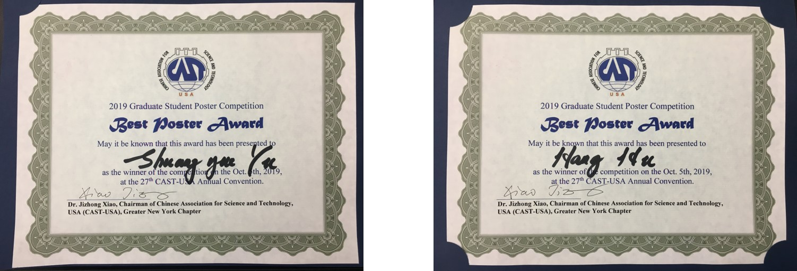
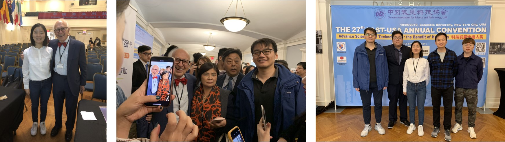
09/27/2019
Prof. Arockia Selvakumar from Vellore Institute of Technology, India visited our Lab
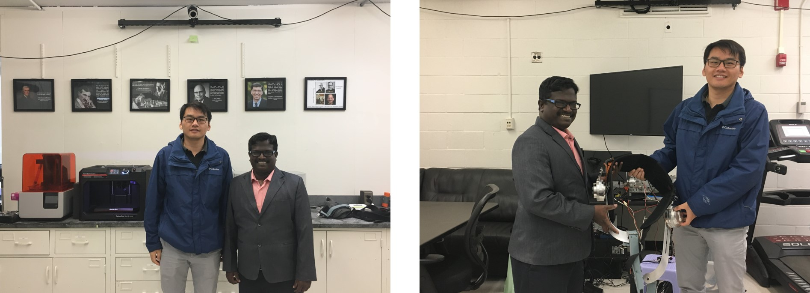
09/27/2019
Biomechatronics Lab hosted visiting students Shotaro Higashi and Aiman Faruq from Toyohashi University of Technology, Japan in September
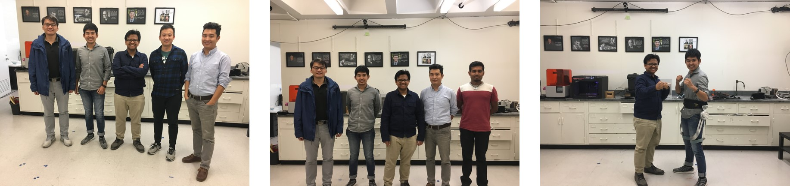
09/12/2019
Prof. Kyujin Cho from Seoul National University delivered the IEEE RAS Distinguished Lecture on soft robotics.
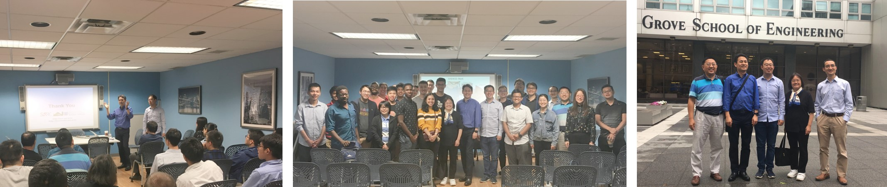
08/23/2019
Dr. Hao Su and lab members attended Rehabilitation Robotics Symposium: From Design to Clinical Application Dr. Su delivered invited talk “Soft, Strong, and Smart Wearable Robots for Mobility and Manipulation Assistance”. The talk was well-received by the audience consisting of clinicians, physical therapist, and engineers.
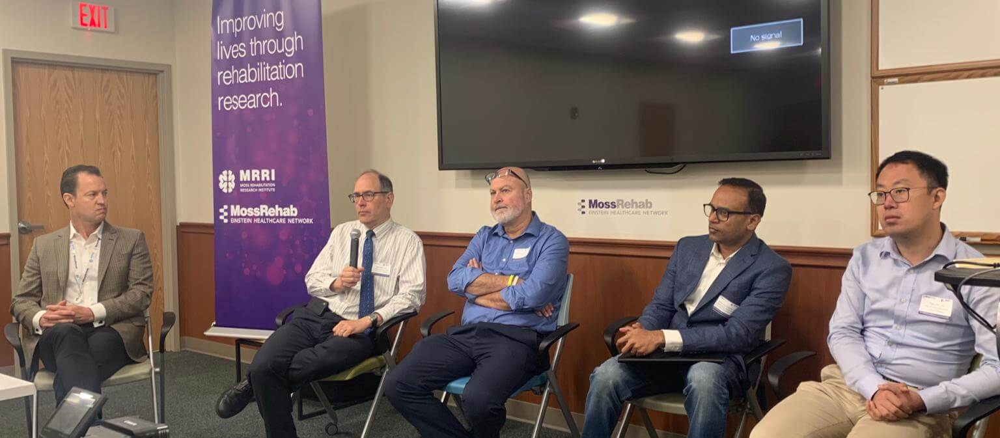
07/19/2019
PhD students Selina and Hang mentored three high school students from CT and NJ.

07/13/2019
BMW engineer visited Biomechatronics Lab
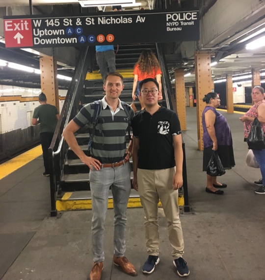
06/20/2019
Biomechatronics Lab hosted a birthday party for Howard

06/06/2019
Drs. Chen Feng, Ludovic Righetti, and Su organized Soft Robotics and Learning workshop. More than 50 people attended the workshop.
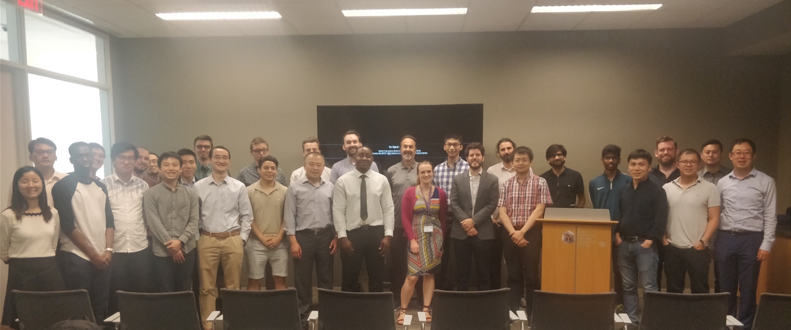
04/2019
Best Paper Finalist, Three in Five Competition, ASME Annual Design of Medical Devices Conference
08/2018
Dr. Hao Su co-organized CIPASS Mechatronics Workshop with Jorge Gonzalez-Cruz, Dr. Feridun Delale, and Dr. Fred Moshary of the CIPASS Experiential Learning Team. Invited guests include Brian Wilson (CEO, DuroUAS), Dr. Biao Zhang (lead principal scientist, ABB), Ranjan Mishra (principal engineer, Medtronic), and Dale Swarts (Senior Director,Stryker).
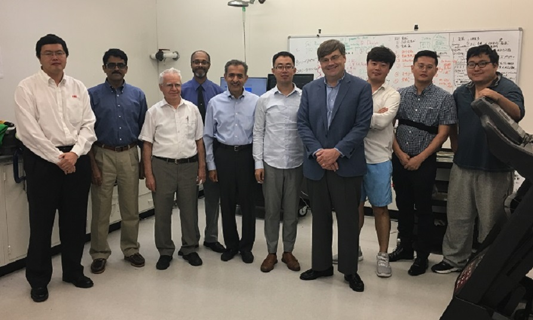
Congratulations for Viktor Silivanov, Hadia Perez, Brian Lynn, and Tom Park for receiving the fellowship and successfully defending their summer research work on soft exoskeletons sponsored by the CiPASS (CCNY Initiative to Promote Academic Success in STEM) program. What a summer! We are proud of your achievement.
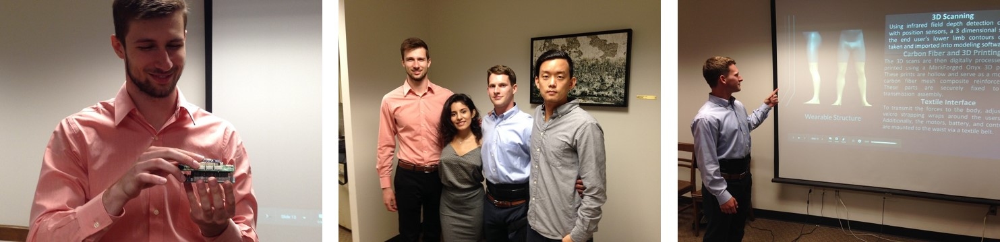
07/2018
Lab's first journal paper is accepted and we will present it in Spain!
J. Wang, X. Li, T. Huang, S. Yu, Y. Li, T. Chen, A. Carriero, M. Oh-Park, H. Su, “Comfort-Centered Design of a Lightweight and Backdrivable Knee Exoskeleton”, IEEE Robotics and Automation Letters (RA-L), 2018
05/2018
Students Jade Ardinez and Winnie mentored by Prof. Hao Su won $50K Kaylie Prize for Entrepreneurship, Zahn Center, City College of New York
Lab receives the TechSAge Design Competition Finalist sponsored by Georgia Tech and the National Institute on Disability, Independent Living and Rehabilitation Research
Students (Ben Bokser, Valentin Adesman, Michael Sidoo, Diego Monastra, Brian Lui, Richard Wilson) mentored by Prof. Hao Su receive Jack & Shelly Feinstein Best Senior Design Team Award and $10K Zahn startup Competition semi-finalist, 2018 spring
Research assistant Brian Lynn received Peter L. Tea Award for undergraduate research
04/2018
03/2018
Our paper on high torque density actuator was accepted for Dynamic Walking Conference 2018.
02/2018
Our paper on soft exo-sheath for hand rehabilitaiton was accepted for IEEE Conference on Soft Robotics 2018.
10/2016
I am honored to join the Technical Committee on Mechanisms and Design of the IEEE Robotics and Automation Society (RAS) as a Junior Chair.
09/2016
I was promoted to Associate Editor of the Journal: Frontiers in Robotics and AI
06/2016
Our paper on soft exosuit control was accepted by International Symposium on Wearable Robotics.
03/2016
I was invited to be an Associate Editor for the International Conference of the IEEE Engineering in Medicine and Biology Society (EMBC).
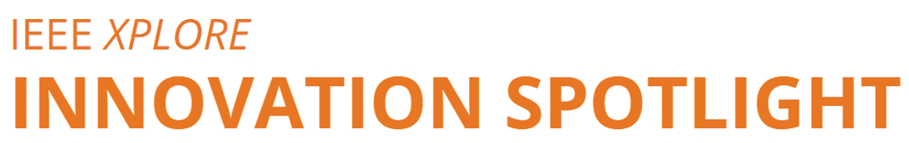
10/2015 MRI-Guided Robot: The Brains Behind Better Neurosurgery? , IEEE Xplore Innovation Spotlight, by IEEE
07/2015 Inside an MRI, a Non-Metallic Robot Performs Prostate Surgery , IEEE Spectrum, by Eliza Strickland
11/2014 I received the Philips Innovation Transfer Award for contribution to electromechanial system design for clinical simulations.
10/2014 I was invited to be an Associate Editor for the IEEE International Conference on Robotics and Automation 2015.
04/2014
I was the conference committee member and organization chair of Catheter Robotics session for ASME Design of Medical Devices Conference 2014.